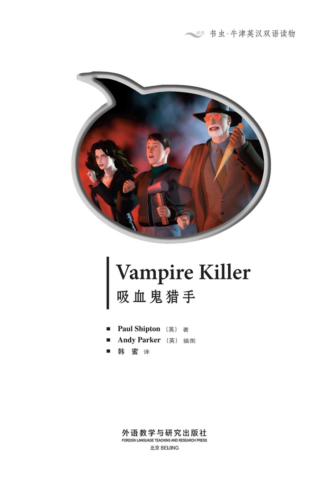
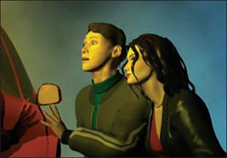
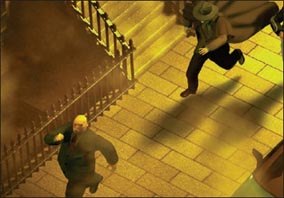
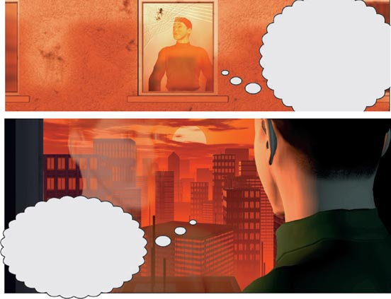
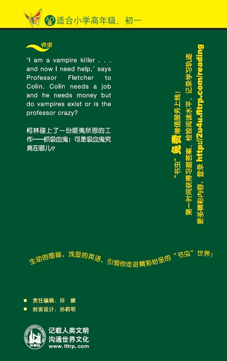

扉页

Copyright
Copyright © Foreign Language Teaching and Research Press 2006
All rights reserved. No part of this publication may be reproduced or distributed by any means, or stored in a database or retrieval system, without the prior written permission of Foreign Language Teaching and Research Press.
本书版权由外语教学与研究出版社独家所有。如未获得该社书面同意，书中任何部分之文字及图片，不得用任何方式抄袭、节录、翻印或存储利用于任何数据库及检索系统等。
Published by Foreign Language Teaching and Research Press
No. 19 Xisanhuan Beilu
Beijing, China 100089
http://www.fltrp.com
版权页
京权图字: 01-2006-2802
Originally published by Oxford University Press, Great Clarendon Street, Oxford. © 2004 This edition is licensed for sale in the People's Republic of China only and not for export therefrom.
'Oxford' is a registered trademark of Oxford University Press.
图书在版编目（CIP）数据
吸血鬼猎手：英汉对照／（英）希普顿（Shipton, P.）著．—北京：外语教学与研究出版社，2006.5（2013.12重印）
（书虫·牛津英汉双语读物）
书名原文：Vampire Killer
ISBN 978-7-5600-5449-0
Ⅰ．吸… Ⅱ．希… Ⅲ．①英语—语言读物②故事—英国—现代 Ⅳ.H319.4：I
中国版本图书馆CIP数据核字（2007）第018923号
出版人：蔡剑峰
责任编辑：田 娜
封面设计：孙莉明
出版发行：外语教学与研究出版社
社 址：北京市西三环北路19号（100089）
网 址：http://www.fltrp.com
书 号：ISBN 978-7-5600-5449-0
* * *
制售盗版必究 举报查实奖励
版权保护举报电话：（010）88817519
目录
Vampire Killer

ACTIVITIES Before Reading
ACTIVITIES
Before Reading
1. Look at the front cover of the book and answer these questions.
1) The story happens...
a today.
b 200 years ago.
c not in a or b.
2) The story happens...
a in a city.
b in the country.
c not in a or b.
2. Read the back cover of the book and choose the correct ending for these sentences.
1) Professor Fletcher is...
a a vampire.
b a vampire killer.
c a doctor.
2) At the end of the story Colin...
a finds a vampire.
b fights Professor Fletcher.
c runs away from the professor.
ACTIVITIES While Reading
ACTIVITIES
While Reading
1. Answer these questions.
1) Where does Colin find out about the job?
2) When does the Professor want to see Colin?
3) Is Colin a fast runner?
4) Does Colin believe in vampires?
5) Why does Colin take the job?
2. Are these sentences true or false?
1) Claudia is not interested in the job.
2) Colin's friends laugh at his new job.
3) Colin arrives at the supermarket at midnight.
4) Colin does not believe in vampires.
5) Professor Fletcher is waiting at the supermarket.
6) Claudia is working for the professor too.
7) Professor Fletcher shows a photograph of the vampire.
8) Colin likes Claudia.
3. Match the words with the pictures.


a Renfield begins to laugh.
b Just then, they hear a noise.
c The professor drives fast.
d Renfield begins to run.
4. Answer these questions.
1) Where is Colin when he sees the vampire?
2) Who is the vampire?
3) Why can't Professor Fletcher help?
4) Why does Claudia run into the next room?
5) What does Colin do with the professor?
6) What does Colin want to do at the end of the story?
ACTIVITIES After Reading
ACTIVITIES
After Reading
1. Match the sentence halves to make five complete sentences.
1) Colin takes the job...
2) His friends laugh...
3) Colin is late...
4) Claudia runs away...
5) Colin wants to leave this town...
a because Colin is a vampire killer.
b because his watch is slow.
c because he is afraid of Claudia.
d because he needs money.
e because she is afraid of the sun.
2. Complete this summary of the story. Use these words:
believe blood brave job joke lives midnight money runs sun vampire
Colin calls Professor Fletcher about a ________. Fletcher says he is a vampire killer and he needs a helper. The helper must be strong, fast and ________. Colin does not ________ in vampires, but he takes the job because he needs ________. His friends laugh about the job. One of them buys some vampire teeth from the ________ shop.
At ________ Colin meets the professor outside the supermarket. Claudia is there too. They find a man called Renfield. Renfield tells them where the vampire ________. At the flat, Colin learns something – Claudia is the ________! She wants to drink Colin's ________. But suddenly the ________ comes up. Colin ________ away.
3. Write a different ending by filling in the speech bubbles.

4. What happens when Claudia and Colin meet again? Write and draw a new ending for the story.
_________________________________
_________________________________
_________________________________
_________________________________
_________________________________
参考译文
参考译文
Vampire Killer
吸血鬼猎手
Are you here for the job?
Yes.
This is Colin Miller. He wants a job.
Why are you laughing?
We're all here for the job!
你是来找工作的吗？
是的。
这是科林·米勒。他想找一份工作。
你笑什么？
我们都是来找工作的！
It is not easy.
Sorry. There are no jobs.
I'm sorry. There's no work here.
No. Sorry.
Wait a minute! What's this?
(Do you need a job? Must be strong, fast and brave. Telephone: Professor Marcus Fletcher at 555 8621.)
工作并不容易找。
对不起。这儿不缺人。
抱歉。这儿不需要人。
不。很抱歉。
等一下！这是什么？
（你需要一份工作吗？要身体强壮，跑得快，胆子大。联系电话：555 8621 找马库斯·弗莱彻教授。）
I'm strong, fast and brave … I can do this job.
Hello. I'm calling about the job.
Come to 58 Bottle Road.
I can come tomorrow.
Tomorrow's no good. You must come now.
But …
Twenty minutes later …
(DING DONG!)
Yes? What do you want?
Professor Fletcher? I'm Colin Miller.
Come in.
我身体强壮、跑得快，也很勇敢……我能做这份工作。
你好。我想问问那份工作的情况。
到博特尔路58号来。
我明天能去。
明天不行。你必须现在就来。
可是……
20分钟后……
（叮咚！）
嗯？什么事？
您是弗莱彻教授吗？我是科林·米勒。
进来吧。
Sit down. Why do you want this job?
I need money. There aren't any jobs in this town.
The professor asks lots of questions.
How old are you?
Eighteen.
Are you a fast runner?
Well, I play football every week.
Are you strong and brave?
Well, yes. I think I am.
Do you like horror films?
They're OK. Why? Are you making a horror film?
Do you believe in ghosts?
What?
What is this job?
请坐。你为什么想要这份工作？
我需要钱。镇上找不到工作。
教授问了很多问题。
你多大了？
18岁。
你跑得快吗？
嗯，我每周都踢足球。
你身体强壮吗？胆子大吗？
嗯，是的。我想是的。
你喜欢恐怖片吗？
还行。为什么问这个？您在拍恐怖片吗？
你相信世上有鬼魂吗？
什么？
这是什么工作？
Then Fletcher asks the important question.
Do you believe in vampires?
Vampires! Oh dear — this is no good!
It's late! Sorry! I must go now. I —
Wait! You need a job and you need money!
But what is the job?
I am a vampire killer. I find vampires and I kill them … And now I need help.
Vampires? Are you talking about Dracula?
随后弗莱彻问了一个关键问题。
你相信世上有吸血鬼吗？
吸血鬼！哦，天哪——这可不妙！
天晚了！抱歉！我现在得走了。 我——
等等！你需要一份工作，你需要钱！
可这究竟是什么工作？
我是个吸血鬼猎手。我寻找吸血鬼并猎杀它们……现在我需要帮助。
吸血鬼？您是说德拉库拉吗？
Dracula is a book, but this is true. There is a vampire here in your town. I must find it and kill it tonight or …
Meet me near the supermarket at midnight.
Colin looks at the money in Fletcher's hand for a long time.
It is a lot of money, but …
Then …
OK.
Good! See you at midnight.
《德拉库拉》是书，而这是真实的。你们镇上有个吸血鬼。我必须在今晚找到并杀死它，否则……
今天午夜在超市附近等我。
科林久久地盯着弗莱彻手中的钱。
真是一大笔钱，可是……
然后……
好的。
很好！午夜见。
It's dark and cold in the street now.
Excuse me.
My name's Claudia. I'm here for the job.
Be careful. He's crazy. He's a vampire killer.
Ha! Ha! Vampires? Wonderful! Are you working for him?
Yes … but this isn't a joke!
OK, but I'm interested. Perhaps he wants another helper?
这时路上又黑又冷。
打扰一下。
我叫克劳迪娅。我是来应聘这份工作的。
小心点儿。他疯了。他是名吸血鬼猎手。
哈！哈！吸血鬼？太棒了！你为他工作吗？
是的……但这可不是开玩笑！
好吧，不过我挺感兴趣的。或许他还需要一个帮手？
Colin is tired, but he does not want to go home.
Perhaps one little drink …
Two pounds, please.
I've got no more money now.
Two of Colin's friends are in the pub.
Hi, Colin. Have you got a job now?
Oh … yes.
What do you do?
I'm a … a vampire killer.
They stop laughing after about ten minutes.
科林很累，可他不想回家。
或许该喝点儿酒……
请付两英镑。
我现在一点儿钱也没有了。
科林的两个朋友在酒吧里。
嗨，科林。你现在找到工作了吗？
哦……找到了。
你做什么？
我是……是吸血鬼猎手。
他们笑了差不多十分钟才停下来。
Come here and give me a kiss!
Go away!
Hey! Where are you going?
The supermarket.
But the supermarket's…
… closed.
Oh, no! My watch is slow. I'm late!
Professor Fletcher is not at the supermarket. But someone is waiting there.
来亲我一下！
走开！
嘿！你去哪儿？
超市。
可是超市已经……
……关门了。
哦，不！我的表慢了。我迟到了！
弗莱彻教授不在超市。可有个人在那儿等着。
Hello again.
It's you! You're working for the professor too!
Tell me something, Colin. Do you believe in vampires?
No! Do you?
They both laugh.
Just then they hear a noise.
You're here. Good. Are you ready?
Oh, yes!
又见面了。
是你！你也来为教授工作了！
跟我说说，科林。你相信世上有吸血鬼吗？
不信！你呢？
他们都笑了起来。
正在这时，他们听到有动静。
你们都在这儿。很好。你们准备好了吗？
哦，是的！
Here. Take these.
Let's go.
Where are we going?
We're looking for this man.
Claudia is laughing. Colin smiles too.
Is he the … vampire?
No, this man works for the vampire.
Oh? That's a good job. Does he get a lot of money?
给。拿着这些东西。
我们走吧。
我们去哪儿？
我们去找这个男人。
克劳迪娅大笑起来。科林也笑了。
他是……吸血鬼?
不，这个人为吸血鬼工作。
哦？那可是份好工作。他赚很多钱吗？
The professor does not answer Claudia's question.
His name's Renfield … and I know where he lives!
They run through the dark streets.
This is the street. We can wait here.
So they wait …
… and wait.
教授没有回答克劳迪娅的问题。
他叫伦菲尔德……我知道他住哪儿！
他们跑过黑暗的街道。
就是这条街。我们可以在这儿等。
于是他们等啊……
……等啊。
Claudia and Colin talk quietly.
Tell me about yourself, Colin. How old are you?
I'm eighteen. And you?
I'm older than you!
She has a nice smile. She has beautiful eyes too. Don't be stupid, Colin — ask her!
Claudia, would you like to go out with me tomorrow afternoon?
Thanks, Colin, but I can't.
Oh, that's OK. It doesn't matter …sorry.
I can't meet you in the afternoon …but I can meet you tomorrow night.
Wonderful! Where do you live?
That's OK, Colin. I can find you.
克劳迪娅和科林小声聊了起来。
跟我说说你的情况，科林。你多大了？
我18岁了。你呢？
我比你大！
她笑起来很好看。她的眼睛也很美。别傻了，科林——问问她！
克劳迪娅，你愿意明天下午和我出去吗？
谢谢，科林，可我不能去。
哦，没事。没关系……对不起。
我下午不能见你……不过我明天晚上能见你。
太棒了！你住哪儿？
无所谓，科林。我能找到你。
Just then they hear a noise.
What's that?
(SHUSH!)
A man comes out of the house.
It is Renfield!
Colin is suddenly afraid.
Is Fletcher's story true?
Quick! Catch him!
正在这时，他们听到有声音。
那是什么？
（嘘！）
一个男人从房子里走了出来。
是伦菲尔德！
科林突然害怕起来。
弗莱彻说的是真的吗？
快！抓住他！
Stop!
Renfield begins to run.
But Fletcher and Colin are faster.
I've got you!
This isn't a joke now.
Where is it? Where's the vampire?
Professor, stop! Let's call the police …
Tell us!
Never, Fletcher!
He knows the professor!
Tell him! Where does the vampire live?
站住！
伦菲尔德跑了起来。
但弗莱彻和科林跑得更快。
抓住你了！
现在可不是开玩笑了。
它在哪儿？吸血鬼在哪儿？
教授，放开手吧！咱们报警吧……
告诉我们！
没门儿，弗莱彻！
他认识教授！
告诉他！吸血鬼住在哪儿？
Renfield is quiet for a minute. Then …
Twenty-six, Moon Street. Number sixteen.
Do you know that street?
I do.
Quick! There isn't much time.
What about Renfield? Shall I call the police?
No. Leave him. We must be quick! We can go in my car. It's near here.
Renfield begins to laugh.
Good luck, Fletcher! You need it!
Ha! Ha! Ha!
伦菲尔德沉默了一会儿。然后……
月亮街26号，16号房间。
你们认识那条街吗？
我认识。
快！时间不多了。
伦菲尔德怎么办？我要报警吗？
不。别管他了。咱们得快去！咱们开我的车去。车就在附近。
伦菲尔德笑了起来。
祝你好运，弗莱彻！你需要好运！
哈！哈！哈！
Five minutes later.
Claudia, listen. I'm afraid. Fletcher's crazy. Renfield is crazy too, I think. Let's run away now!
No, Colin. I want to know. Is the professor's story true?
She gets in the car.
I can't leave her with the professor.
Colin gets in, too.
The professor drives fast.
What time is it?
Five o'clock, I think. But my watch is slow.
Left here.
五分钟后。
克劳迪娅，听着。我很害怕。弗莱彻疯了。我觉得伦菲尔德也疯了。咱们现在就逃走吧！
不，科林。我想知道真相。教授说的是真的吗？
她上了车。
我不能让她单独和教授在一起。
科林也上了车。
教授开得飞快。
现在几点了？
我想有五点了。不过我的表慢了。
这儿左拐。
Come on!
Claudia, take the fire escape. Colin, come with me.
Colin goes upstairs with Fletcher.
I can't believe this!
Here it is — number sixteen.
One, two, three … now!
(BOOM!)
快点儿！
克劳迪娅，走消防通道。科林，跟我来。
科林和弗莱彻跑上楼梯。
我简直不敢相信！
就是这儿——16号。
一、二、三……嗨！
（砰！）
They run in, but …
There's nobody here.
Look in the other rooms!
Colin goes to the bedroom.
This is crazy! A vampire can't live here!
What's this?
Suddenly …
Come here, Colin.
Then Claudia smiles.
他们冲了进去，可是……
这儿没人。
看看其他房间！
科林去了卧室。
太疯狂了！吸血鬼不可能住在这儿！
这是什么？
突然……
过来，科林。
接着克劳迪娅笑了。
Take those joke teeth out, Claudia. This isn't the time for jokes.
It isn't a joke, Colin.
(Claudia Marko
Number 16
26 Moon Street
London)
You? You live here?
That's right. I do.
And Renfield?
Renfield works for me.
Suddenly Conlin remembers.
Where is Professor Fletcher?
摘掉那些玩具假牙，克劳迪娅。现在可不是开玩笑的时候。
这不是玩笑，科林。
（克劳迪娅·马科
16号房间
月亮街26号
伦敦）
你？你住这儿？
没错。我住这儿。
伦菲尔德呢？
伦菲尔德为我工作。
突然科林想起了什么。
弗莱彻教授在哪儿？
Professor! Help!
(THUD!)
Ouch!
Professor Fletcher! Get up!
Oh dear, oh dear.
That's OK, Colin. You don't need to be afraid.
She is looking at his neck.
Are you hungry now, Colin? I am. I'm hungry for …
… blood!
教授！救命！
（砰！）
哎哟！
弗莱彻教授！起来！
哦，天哪，哦，天哪。
没关系，科林。你不用害怕。
她看着他的脖子。
你现在饿吗，科林？我饿了。我要喝……
……血！
Are these the last minutes of my life?
Wait! Tell me something. Why? Why are you doing this?
The vampire stops.
Why not? Everybody needs to eat and drink!
I look at you, Colin, and I see …
… food.
Colin closes his eyes and waits to die.
Nothing happens.
The sun! Vampires can't be in the sun. It can kill them.
The sun's coming up! But it's too early! Oh no! Your watch is slow!
这是我生命的最后时刻吗？
等等！告诉我，为什么？你为什么这么做？
吸血鬼停了下来。
为什么不？每个人都需要吃喝。
我看着你，科林，就看到了……
食物。
科林闭上眼等死。
一点儿事儿也没有。
太阳！吸血鬼不能呆在阳光下，阳光会要了它们的命。
太阳出来了！可这太早了！哦不！你的表慢了！
She runs into the next room.
What now? Go into the room? Kill Claudia? Can I do it?
No!
Come on.
I'm sorry, Professor,
What? Where am I?
Thank you, sun!
她跑进另一个房间。
现在怎么办？进到那个房间里？杀死克劳迪娅？我能行吗？
不行！
快走。
对不起，教授。
什么？我这是在哪儿？
谢谢你，太阳！
Colin is at home all day.
I can't call the police. The professor is in hospital, I think.
What can I do?
Everything needs to eat and drink. I understand. But is the fly very happy about that?
Claudia can always find me, she says. Perhaps next week. Perhaps tonight …
科林一整天都呆在家里。
我不能报警。我想教授已经住院了。
我该怎么办？
万物都需要吃喝，这我理解。但苍蝇对此感到开心吗？
克劳迪娅说她总是能找到我。也许是下周。也许是今晚……
封底
